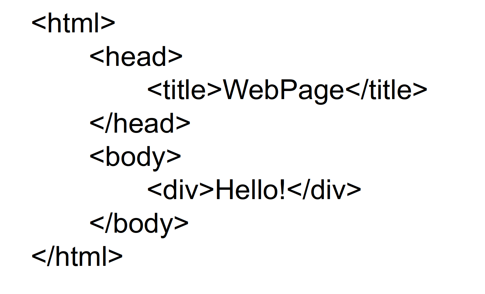
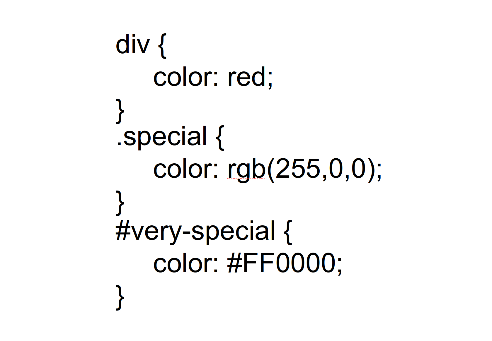

web fundamentals
commlab - spring 18
what is the web?
The World Wide Web (WWW) is an information space where documents and other web resources are identified by Uniform Resource Locators URLs, interlinked by hypertext links, and can be accessed via the Internet.[1]. English scientist Tim Berners-Lee invented the World Wide Web in 1989. He wrote the first web browser computer program in 1990 while employed at CERN in Switzerland.[2][3]
The World Wide Web has been central to the development of the Information Age and is the primary tool billions of people use to interact on the Internet.[4][5][6]
http / html

how it all works
html
css
js
html
css
javascript
hyper text markup language
<div> hello </div>
web fundamentals
commlab - spring 18
what is the web?
The World Wide Web (WWW) is an information space where documents and other web resources are identified by Uniform Resource Locators URLs, interlinked by hypertext links, and can be accessed via the Internet.[1]. English scientist Tim Berners-Lee invented the World Wide Web in 1989. He wrote the first web browser computer program in 1990 while employed at CERN in Switzerland.[2][3]
The World Wide Web has been central to the development of the Information Age and is the primary tool billions of people use to interact on the Internet.[4][5][6]
http / html
how it all works
html
css
js
html
css
javascript
hyper text markup language
html syntax

super simple site!
cascading stylesheets
css syntax

body, div, p >> specific elements
.class >> a group of items on the page
#id >> a unique item on the page
super simple stylish site